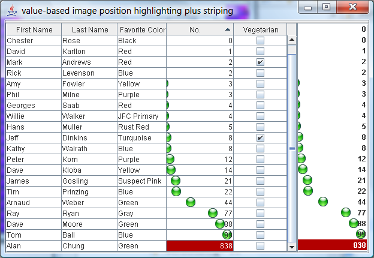
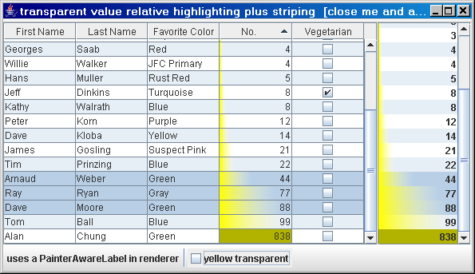
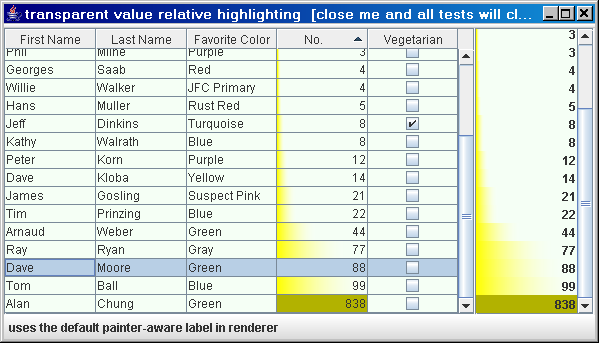
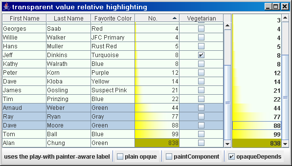
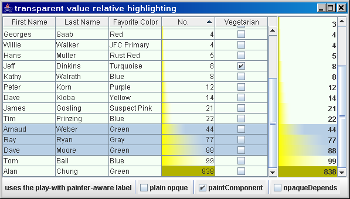

Experiments with Highlighters
Screenshot - Image
The idea is to decorate the cell with an Icon/Image which has a position relative to the cell content value.

Screenshots - transparent
The idea is to have value-based gradient background highlighters.
Distilled: PainterAwareLabel
Conditional strategy in paintComponent depends on both opaqueness and custom painter available.

History/Evolution
Core SwingX renderer state (17. Jan. 2007):
Problem: selected overwrites the painter

Experiments
A: adjust opaque with painter - problem: selected state invisible

B: opaque independent on painter - selected state visible
